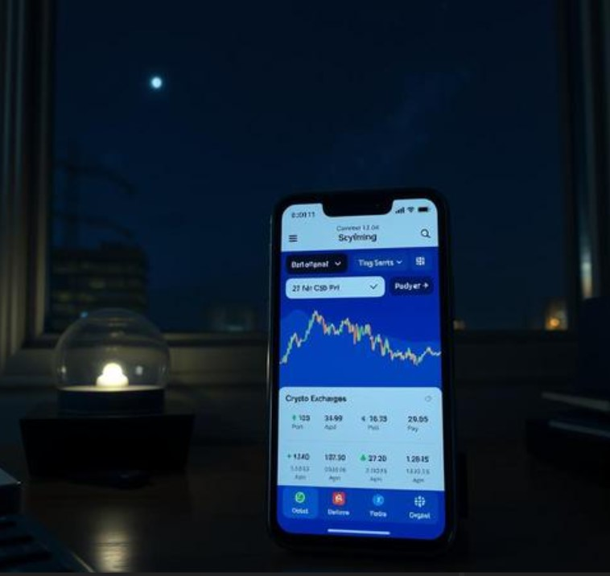

Ask almost anyone in crypto about their first purchase and you'll get a surprisingly specific, surprisingly vivid story. The exact app. The exact small amount, because nobody trusted it enough yet to put in real money. The slight nervousness of typing in a card number for something that, at the time, felt vaguely like buying Monopoly money with real cash.

This is a strange and specific kind of memory. Most people don't remember the day they opened a regular savings account or bought their first index fund. But the first crypto purchase tends to stick, vividly, the way only genuinely new experiences do.
Why This Particular Memory Sticks
Psychologists who study memory formation note that novelty is one of the strongest predictors of vivid, long-lasting memory — genuinely new categories of experience get encoded more richly than routine ones, which is part of why "firsts" in general (first car, first apartment, first concert) tend to outlast countless ordinary days that came after them.
Buying crypto for the first time, for most people who got in early or even moderately early, was a genuinely new category of experience: a new kind of asset, a new kind of risk, sometimes a new kind of community discovered in the process (forums, Discord servers, subreddits full of people equally unsure what they were doing).
What People Actually Remember
It's rarely the dollar amount. It's the context: who told them about it, what they thought would happen, whether they told their family (and how that conversation went), the specific app interface from an era of crypto that's now completely changed. These details are exactly the kind that fade fastest from memory and get replaced by a flatter, simpler version of the story over time — "I bought some Dogecoin in 2021" instead of the actual, specific, slightly chaotic memory of how it really happened.
Giving the Memory a Permanent Home
This is part of why some crypto holders have started marking that first-purchase date with a star on GalaxySpace — created and paid for in the very coin that started it all, with the actual story (not just the date) written into the message.
It's a small, slightly meta way to use crypto: spending a tiny amount of the same currency that started your crypto journey, to permanently mark the day the journey began. You can create one here, paid in Dogecoin — a fitting way to close the loop on where it all started.